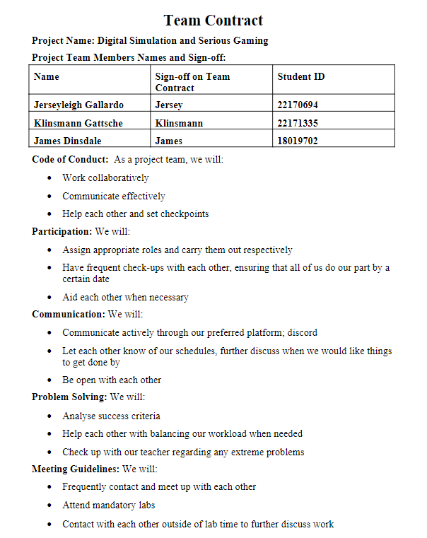

We have chosen this topic as it sparks our interests, particularly the advancements made in digital simulations and gaming. As previously mentioned, extra material in different formats was made accessible to students due to online learning. These materials could come in the form of different sources such as RStudio, photoshop, etc. Relating this to the serious gaming aspect, platforms such as Minecraft, the Sims, and other entertaining resources have also been deemed practical in education. It piques our interest as we are firm believers that making education fun is also a convenient way to help students. Further allowing them to gain motivation to learn.
Using digital simulations and gaming in education can lead to opportunities for society. These include increasing engagement and motivation, developing critical thinking and problem-solving skills, and in-depth research. But uniquely it also can provide technological literacy and online education. (Ya-Ting Carolyn Yang & Chang, 2013) Technological literacy allows the student to become familiar with technology and digital literacy through the different software applications, user interfaces, and virtual environments. This allows them to keep up with the technological advancements that are rapidly evolving in the modern world. Technology has allowed us to implement educational opportunities to online platforms which connects the gap for education around the world. Students can trial experiential situations with another student from a different region which allows a wider view of perspectives.
We have also selected this topic as it Is extremely relevant to our chosen target demographic; University students.
We have chosen our target demographic to be university students, more so students who aren't firm believers that technology isn't a useful tool to use within their studies. The reason is the assignment's aim which states, "state a topic's impact on society in general and also upon the individual". This influences our final project to be something that is able to provide useful information as well are persuade them to agree with our statements and beliefs.
Link to our GitHub repository: https://github.com/geTureChoppa/CTS-Assignment3-Serious-Gaming
Our Team Contract:
